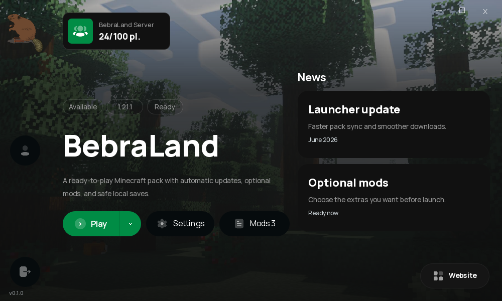
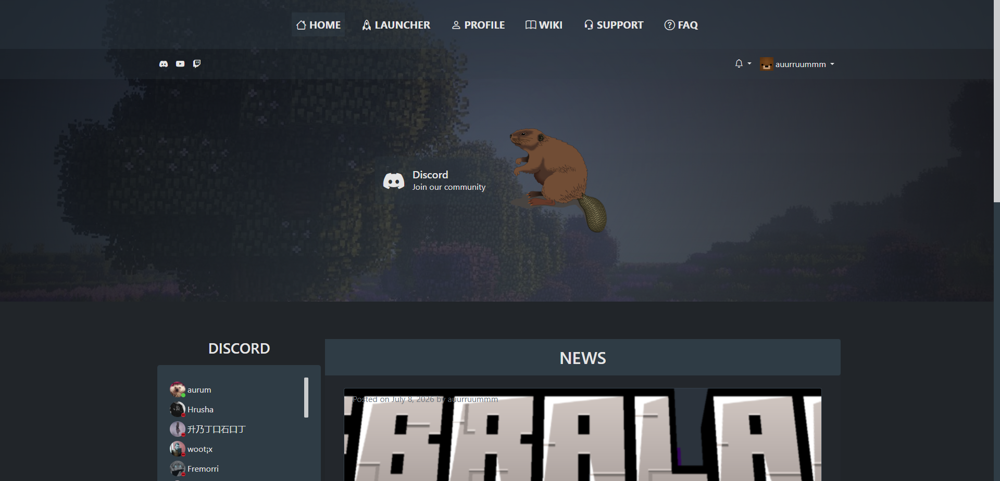

Collection '26
auuruum
A builder from Vilnius.
I make esports infrastructure, Minecraft mods, Arduino hardware, Discord tools, and visual experiments that turn rough ideas into working things.
A portfolio across four different directions: Minecraft mods, a standalone Arduino weather station, the BebraLand server platform, and CS2 tournament infrastructure built for it.
Selected work
Featured projects
Minecraft · mods
Minecraft mods
It started with a problem on my own BebraLand server. I released the fix as a mod in case it helped someone else — and it did.
Standalone project · Arduino
Weather Station DIY
An independent weather-station build split into sensor hardware and a display interface.
Owned platform · Minecraft
BebraLand server ecosystem
This is my own Minecraft server: a community platform with real players, events, Discord, a website, and a launcher.
Community tooling
Open Bot
BebraLand Discord Bot
Automation and quality-of-life tooling for the BebraLand Minecraft community.

Minecraft community platform
Open Website
BebraLand Website
A complete community portal with Discord, news, launcher downloads, wiki, and FAQ.
BebraLand product suite
See it in action
The server grew into a full platform: community website, Discord tools, launcher interface, local profiles, mod controls, settings, and offline-ready flows.
CS2 · broadcast infrastructure
Tournament tooling built for BebraLand
I built these forks for a BebraLand CS2 tournament. Later, a Slovenian tournament organizer reached out and chose them for live Epicenter.si and Diamant Esports events.
Fork · broadcast HUD
Open HUD
JTs HUD
Fork of JTs-Hud that reads the same teams, players, logos, and match data as MAT.
Fork · system of record
Open MAT
MatchZy Auto Tournament
Fork of MatchZy Auto Tournament — configure teams, players, nicknames, and logos once.
Fork · match layer
Open Plugin
MatchZy Enhanced
Fork of MatchZy Enhanced — the same match data reaches the CS2 server and match layer.
The real differentiator
Three forks.
One ecosystem.
These are forks, not standalone copies: I connected three upstream projects so one match setup feeds the server, match layer, and broadcast HUD.
MatchZy Auto Tournament
Create the team, players, nicknames, and logos in MAT.
MatchZy Enhanced
The same match data is used by the CS2 server and match layer.
JTs HUD
Teams, players, names, and branding appear in the HUD automatically.
One source of truth. Build the match once in MAT — the rest of the stack picks it up.
Live deployments
From BebraLand to the main stage
What started as a BebraLand tournament project became a stack used in major Slovenian CS2 productions.
Tech stack
Tools I use to ship
Languages
 Python
Python C++
C++ JavaScript
JavaScript HTML5
HTML5 CSS3
CSS3Embedded / Hardware
 Arduino
Arduino ESP32 / ESP8266
ESP32 / ESP8266DevOps / Infrastructure
 Linux
Linux Docker
Docker Nginx
Nginx PM2
PM2 Uptime Kuma
Uptime Kuma MySQL
MySQL MariaDB
MariaDB phpMyAdmin
phpMyAdminVirtualization
 VMware
VMware VirtualBox
VirtualBoxCreative tools
 Figma
Figma OBS Studio
OBS Studio


API ERROR
total Minecraft mods downloads
404
sleep schedule not found
24/7
curious builder mode
Contact
Have something in mind?
Tell me about your idea. We’ll work out the details together.
Discuss a projectaurimasdovgialo@gmail.com